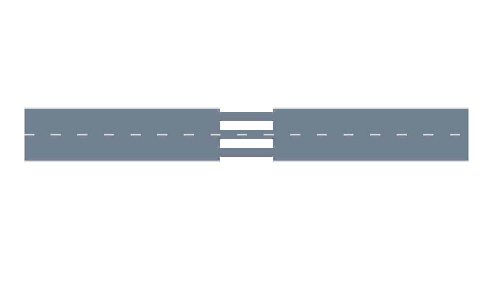
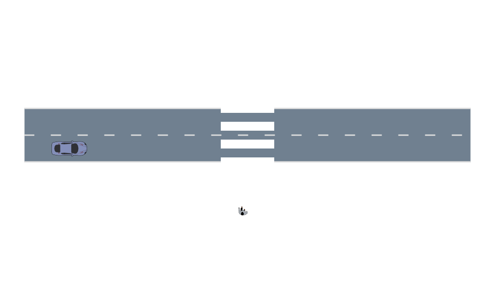
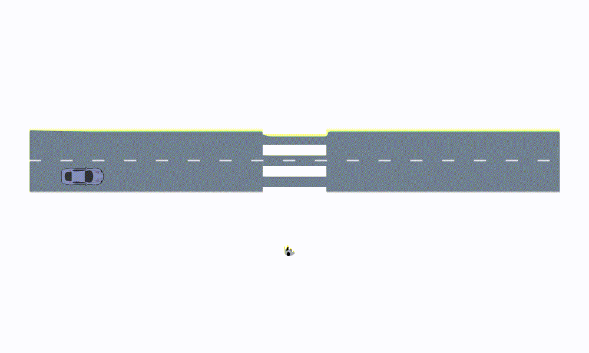

Crosswalk
In this notebook we demonstrate how to define a crosswalk with pedestrians using AutomotiveDrivingModels. To do this, we define a crosswalk area as well as a pedestrian agent type.
Generate a crosswalk environment
We define a new concrete type that will contain the roadway (where cars drive) and the crosswalk definition which is just a regular lane.
using AutomotiveDrivingModels
using AutoViz
using Random
struct CrosswalkEnv
roadway::Roadway{Float64}
crosswalk::Lane{Float64}
endThe crosswalk lane consists of a straight road segment perpendicular to the road. We will define the roadway just as a straight road.
# geometry parameters
roadway_length = 50.
crosswalk_length = 20.
crosswalk_width = 6.0
crosswalk_pos = roadway_length/2
# Generate a straight 2-lane roadway and a crosswalk lane
roadway = gen_straight_roadway(2, roadway_length)
crosswalk_start = VecE2(crosswalk_pos, -crosswalk_length/2)
crosswalk_end = VecE2(crosswalk_pos, crosswalk_length/2)
crosswalk_lane = gen_straight_curve(crosswalk_start, crosswalk_end, 2)
crosswalk = Lane(LaneTag(2,1), crosswalk_lane, width = crosswalk_width)
cw_segment = RoadSegment(2, [crosswalk])
push!(roadway.segments, cw_segment) # append it to the roadway
# initialize crosswalk environment
env = CrosswalkEnv(roadway, crosswalk)Render the crosswalk
We will define a new method to render this new environment. The roadway part is just rendered regularly, we add specific instuction for the crosswalk part that will display the white stripes.
using Cairo
function AutoViz.add_renderable!(rendermodel::RenderModel, env::CrosswalkEnv)
# render the road without the crosswalk
roadway = gen_straight_roadway(2, roadway_length)
add_renderable!(rendermodel, roadway)
# render crosswalk
curve = env.crosswalk.curve
n = length(curve)
pts = Array{Float64}(undef, 2, n)
for (i,pt) in enumerate(curve)
pts[1,i] = pt.pos.x
pts[2,i] = pt.pos.y
end
add_instruction!(
rendermodel, render_dashed_line,
(pts, colorant"white", env.crosswalk.width, 1.0, 1.0, 0.0, Cairo.CAIRO_LINE_CAP_BUTT)
)
return rendermodel
end
snapshot = render([env])
Navigate the crosswalk example
Cars will be navigating in the roadway just as before. For the pedestrian we can define a new vehicle definition where we specify the size of the bounding box represented by the pedestrian.
# field of the VehicleDef type
fieldnames(VehicleDef)
# Agent.Class is from AutomotiveDrivingModels
const PEDESTRIAN_DEF = VehicleDef(AgentClass.PEDESTRIAN, 1.0, 1.0)# Car definition
car_initial_state = VehicleState(VecSE2(5.0, 0., 0.), roadway.segments[1].lanes[1],roadway, 8.0)
car = Entity(car_initial_state, VehicleDef(), :car)
# Pedestrian definition using our new Vehicle definition
ped_initial_state = VehicleState(VecSE2(+24.5,-7.0,π/2), env.crosswalk, roadway, 0.5)
ped = Entity(ped_initial_state, PEDESTRIAN_DEF, :pedestrian)
scene = Frame([car, ped])
# visualize the initial state
snapshot = render([env, scene])
Simulate the scenario
As before, associate a driver model to each vehicle in the scene. We will use the model defined in the intersection example for both agents.
mutable struct LinearDriver <: DriverModel{LaneFollowingAccel}
a::LaneFollowingAccel
p::Float64 # confidence on the pedestrian intention
k::Float64 # gain
end
function AutomotiveDrivingModels.observe!(model::LinearDriver, scene::Frame, roadway::Roadway, egoid)
model.a = LaneFollowingAccel(model.k*model.p)
# change the confidence based on some policy
# you can get the position of the pedestrian from the scene
model.p = 100.0
end
Base.rand(rng::AbstractRNG, model::LinearDriver) = model.atimestep = 0.1
nticks = 50
# define a model for each entities present in the scene
models = Dict{Symbol, DriverModel}()
# Constant speed model
models[:car] = LinearDriver(LaneFollowingAccel(0.0), 20.0, -0.02)
models[:pedestrian] = IntelligentDriverModel(v_des=1.0)
# execute the simulation
scenes = simulate(scene, roadway, models, nticks, timestep)Generate a video with Reel.jl
using Reel
function animate_record(scenes::Vector{Frame{E}},dt::Float64, env::CrosswalkEnv) where {E<:Entity}
duration = length(scenes)*dt::Float64
fps = Int(1/dt)
function render_rec(t, dt)
frame_index = Int(floor(t/dt)) + 1
return render([env, scenes[frame_index]])
end
return duration, fps, render_rec
end
duration, fps, render_hist = animate_record(scenes, timestep, env)
film = roll(render_hist, fps=fps, duration=duration)